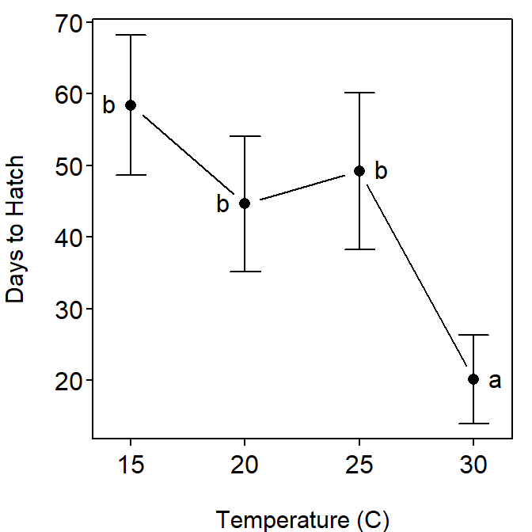

summary() on your lm() results).
Table 1: Analysis of variance table for the days to hatch by temperature group.
| Df | Sum Sq | Mean Sq | F value | Pr(>F) |
| 3 | 8.03e+03 | 2.68e+03 | 16 | 9.08e-07 |
| 36 | 6.03e+03 | 167 |
Table 2: Tukey’s multiple comparison results for the days to hatch by sea turles at various temperature groups.
Estimate Std. Error t value p value
20 - 15 = 0 -13.8 5.786623 -2.3848108 9.835234e-02
25 - 15 = 0 -9.2 5.786623 -1.5898739 3.969479e-01
30 - 15 = 0 -38.3 5.786623 -6.6187141 1.457112e-06
25 - 20 = 0 4.6 5.786623 0.7949369 8.562714e-01
30 - 20 = 0 -24.5 5.786623 -4.2339033 7.559620e-04
30 - 25 = 0 -29.1 5.786623 -5.0288402 7.939105e-05
Figure 1: Plot of mean (with 95% CI) days to hatch by sea turtles at various temperature groups. Different letters indicate means that are significantly different.
Table 3: Tukey’s confidence interval results for the difference in mean days to hatch by sea turtles for each pair of temperature groups.
Estimate lwr upr
20 - 15 -13.8 -29.37859 1.778585
25 - 15 -9.2 -24.77859 6.378585
30 - 15 -38.3 -53.87859 -22.721415
25 - 20 4.6 -10.97859 20.178585
30 - 20 -24.5 -40.07859 -8.921415
30 - 25 -29.1 -44.67859 -13.521415R Appendix.
library(multcomp)
d <- read.csv("turtles.csv")
d$Temperature <- factor(d$Temperature)
lm1 <- lm(Days~Temperature,data=d)
anova(lm1)
mc1 <- glht(lm1,mcp(Temperature="Tukey"))
summary(mc1)
confint(mc1)
fitPlot(lm1,xlab="Temperature (C)",ylab="Days to Hatch")
addSigLetters(lm1,c("b","b","b","a"),pos=c(2,2,4,4))